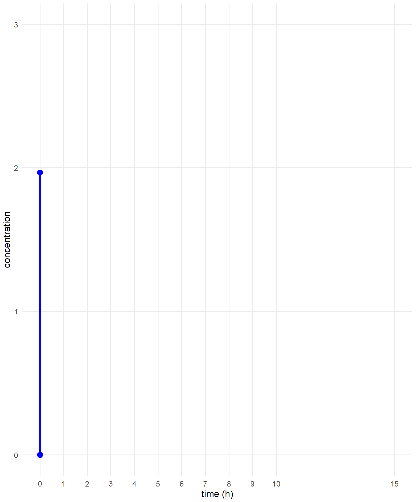
Statistical Indoctrination I
(L)ADME and the one compartmental model
Márton Kiss, MD
2025-11-07
(L)ADME: the Journey of a Drug
Every drug molecule follows a pharmacokinetic pathway often summarized as (L)ADME
L: Liberation — release of the active substance from its formulation
A: Absorption — entry from the site of administration into systemic circulation
D: Distribution — reversible transfer among plasma, tissues, and organs
M: Metabolism — enzymatic transformation into metabolites (often hepatic)
E: Excretion — elimination of parent drug and metabolites (renal, biliary, etc.)
These processes determine exposure (Concentration–time profile) and thereby response.
Visualizing the (L)ADME Process
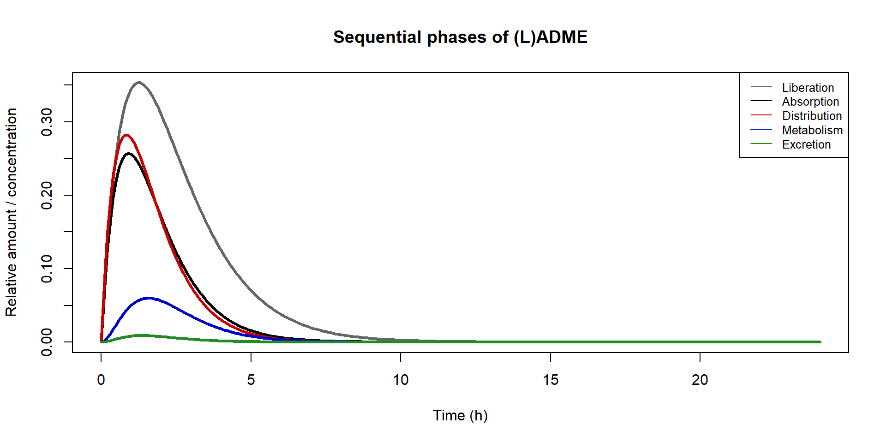
Figure 1: (L)ADME schematic: concentrations over time reflecting sequential processes.
Note on Models
- In the natural sciences we model our environment — we make a stand–in world which is simpler than the real one.
- We deliberately discard detail. We keep only simplified structures.
- With several of these candidate systems we choose the one which is the best for our purposes.
- And then we explore that simplified world as if it were the real one — because it is easier to think inside that reduced world.
“All models are wrong, but some are useful.” (G.E.P. Box)
So what we work with is not “the truth”, but rather we use an instrument to have important realizations.
What remains of (L)ADME
Every drug molecule follows a pharmacokinetic pathway often summarized as (L)ADME
L: Liberation — release of the active substance from its formulationA: Absorption — entry from the site of administration into systemic circulation
D: Distribution — reversible transfer among plasma, tissues, and organsM & E handled together
These processes determine exposure (Concentration–time profile) and thereby response.
Setup, Step 1 — Our Pool & Two Gnomes (Sequential)
- We have a Pool (volume (V)) in a garden, initially clear.
- At time (t=0), Blue Gnome dumps dye.
- The pool is instantly colored proportional to the concentration of the dye in the pool water.
- (Blue Gnome has a finite supply of dye and always dumps half of his supply in one go.)
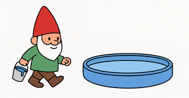
Step 1b — Drain Gnome Exchanges a Bucket
- At (t=1) the Yellow Gnome removes a bucket of pool water and replaces it with clear water.
- Volume stays constant, but the dye fraction falls → concentration drops.
- This is our first elimination action: a tiny step down from (C_0).
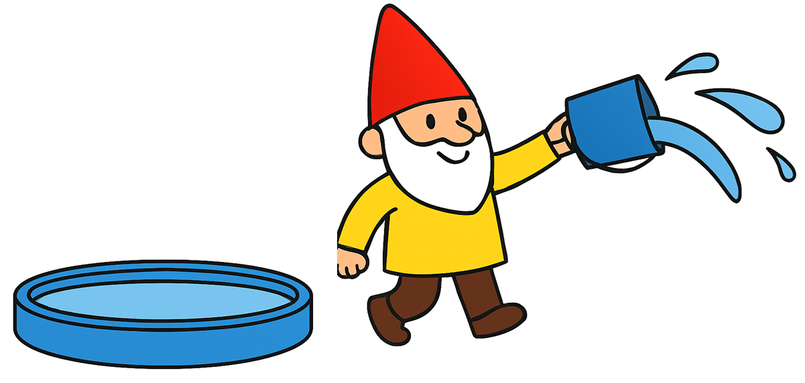
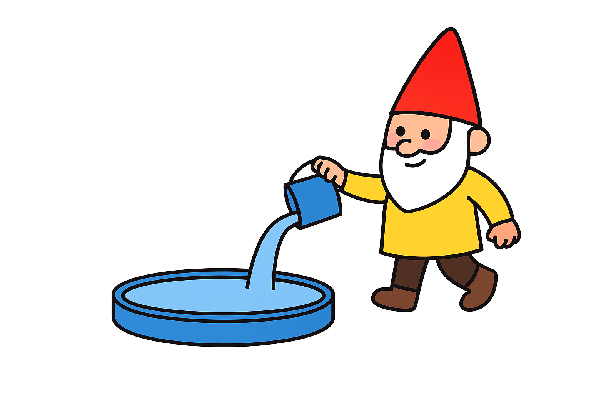
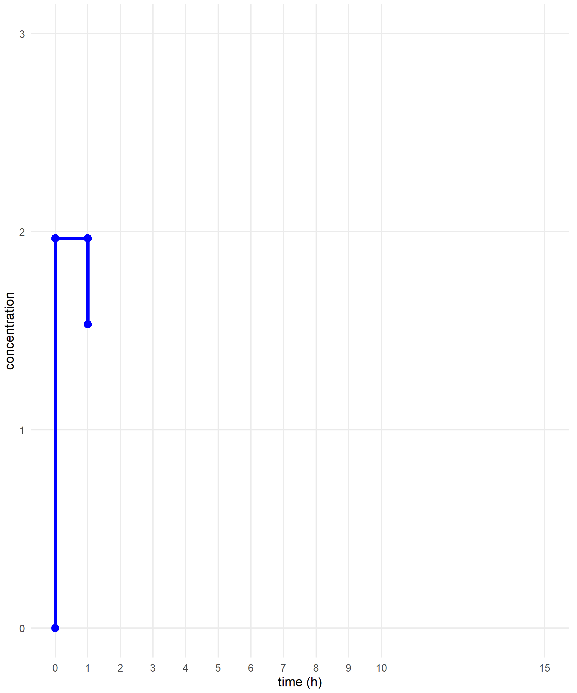
Step 2 — Repeat
- We repeat the previous step
- Blue Gnome brought less dye this time
- Yellow Gnome filters water which is “bluer” this time
- The Voume of the pool is the same
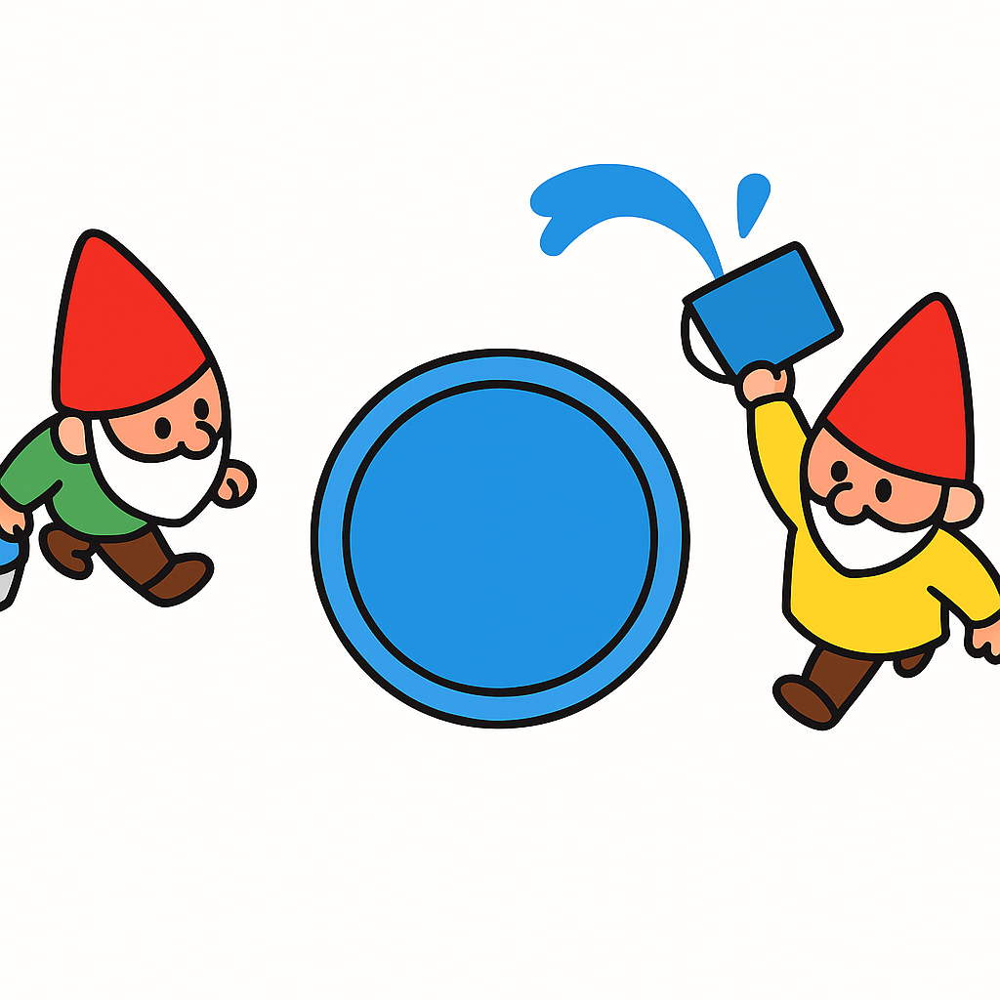
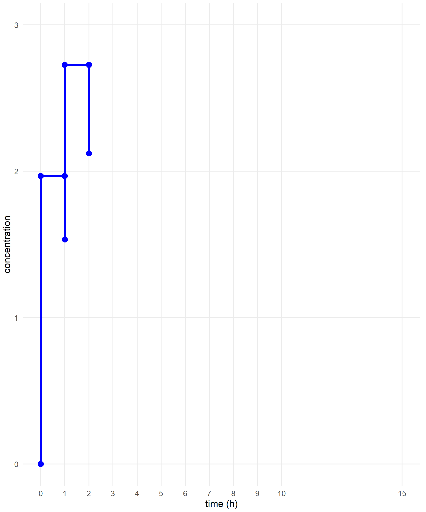
“All” steps
- Repeat these steps 10 times
- The supply of dye is practically exhausted by the end
- The water can never get completely clear
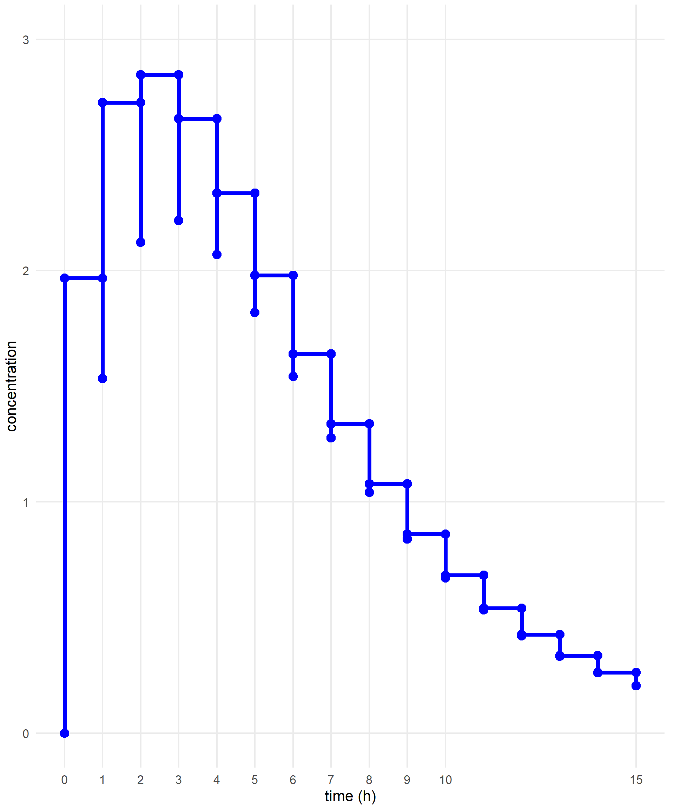
Reducing time step
- Make the Gnomes faster but keep the amount of their work constant (per hour).
- Using “supersonic” Gnomes we arrive at a curve.
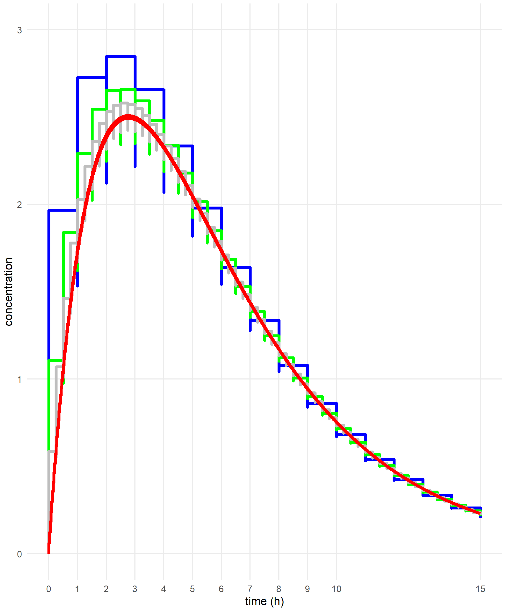
Getting abstract
- Make the Gnomes faster but keep the amount of their work constant (per hour).
- Using “supersonic” Gnomes (tiny steps) we arrive at a curve.
- The rate constant or the speed of the gnomes could be phrased as:
- if the same amount of dose would be absorbed for an hour as in this instant, what fraction of dose would be absorbed?
- if the same amount of the pool/compartment would be cleared for an hour as in this instant, what fraction of the pool/compartment would be absorbed?
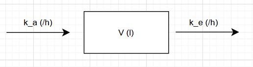

Model vs. reality
To reiterate, don’t expect the model to fit reality, which is usually much more complex.
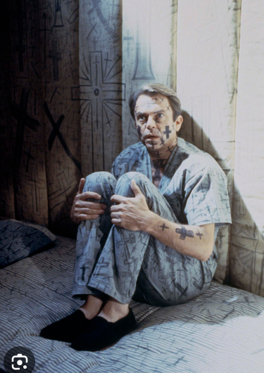
Observations
- We can (usually) only observe the concentrations at discrete times
- Deviations from the expectations can stem from (at least):
- Measurement errors
- Intercurrent physical activity / state
- Faster / Slower individual absorption/clearence
- Other factors….
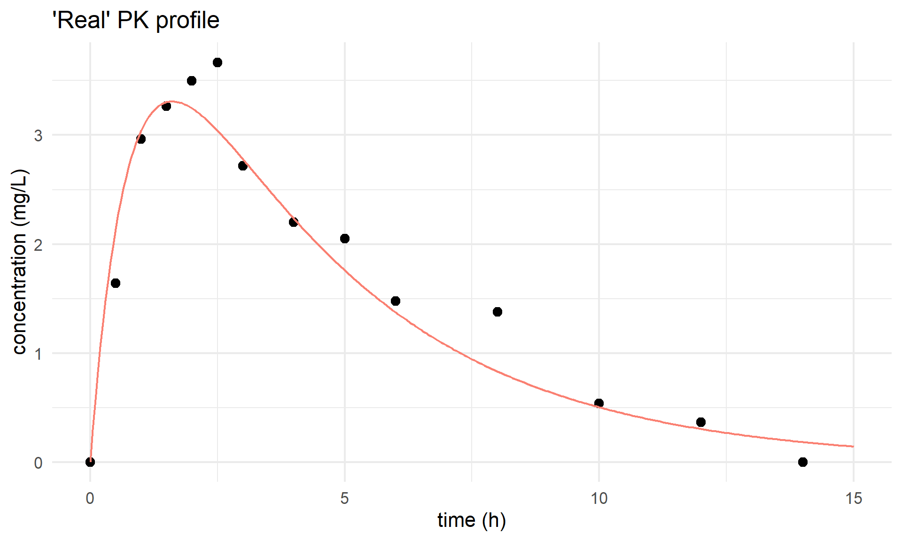
Estimating parameters
- We should try to minimize the sum total of squared deviations.
- We are looking for the parameter trio V, \(k_a\), \(k_e\) with whom this value is minimal.
\[ f(V, k_a, k_e) \;=\; \sum_{i=1}^{n} \bigl( C_{\text{obs},i} - C_{\text{model}}(t_i \mid V, k_a, k_e) \bigr)^2 \]
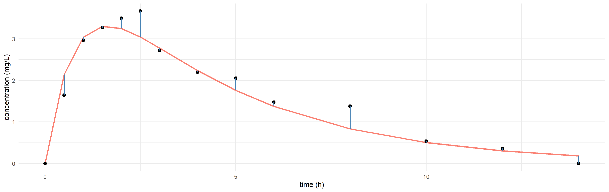
Objective function
- We can see the value of the objective function against the different values of the parameters
- We should call an optimizer algorithm which (reliably) finds the absolute minimum value (with as few steps as possible)
- The theory and especially the practice is problematic because the effect of the parameters are nonlinear
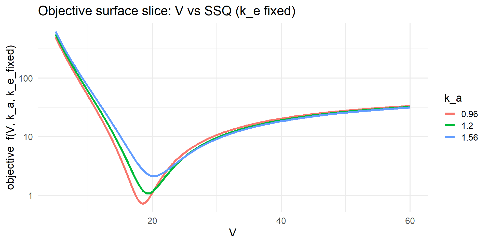
Results in this case
- For this profile, the green curve minimizes the deviation of the model from the real values.
- This is only for this specific profile (after 1 dosing).
- Population pharmacokinetics aims to analyze data from several profiles using these kinds of models.
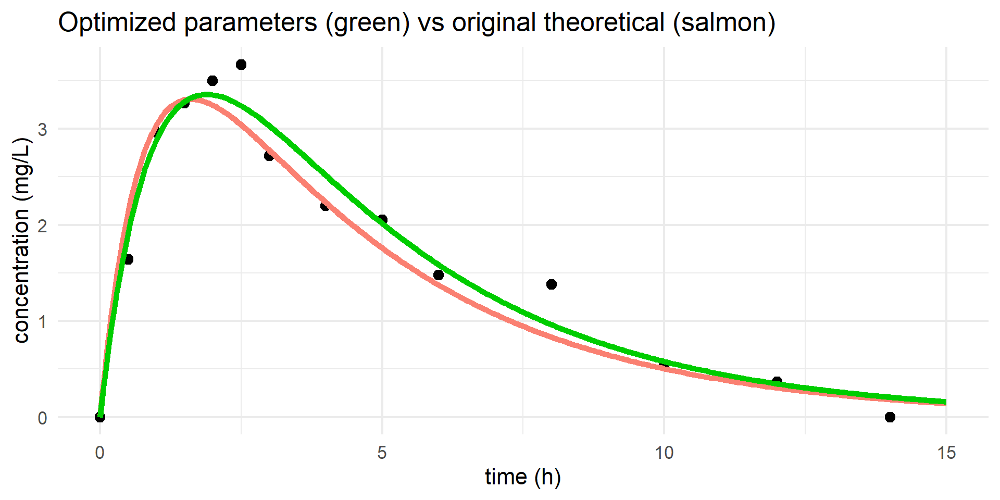
Dissolution’s link
- Dissolution testing is a staple of in vitro development
- This is in line with the thinking that different formulations could potentially effect absorption, but not elimination
- Dissolution testing aims to simulate the liberation & absorption of the API from the formulation in different locations in the GI tract
- If this model holds, it could help predict in \(C_{max}\) and up to a point AUC.
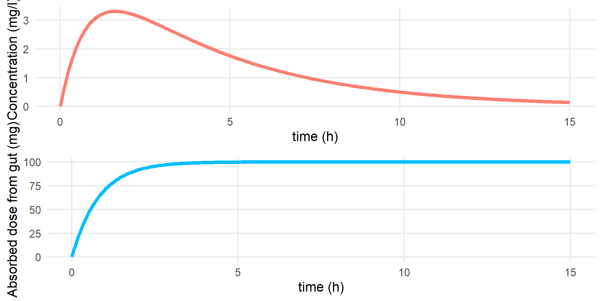
Lognormal changes
- Allometry describes a power rule for these kinds of parameter distributions at least with regards to size (link).
- For these parameters at least some influencing factors are multiplicative (eg. \(V = V_0 * mass^{0.75}\)) - these result in lognormal deviations.
- Even if we only allow a normally-distributed body mass to influence V, extreme values start to appear.
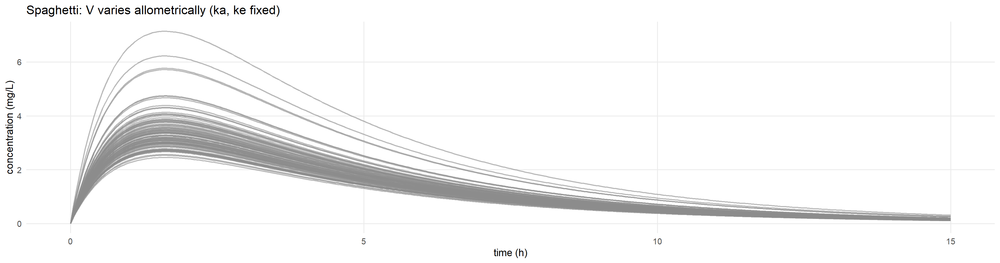
Lognormal changes (2)
- Even in this simple model, variability could be introduced for \(k_a\) and \(k_e\) as well; also \(C_{max}\) isn’t directly observable.
- For the below example the variability is 19.38%.
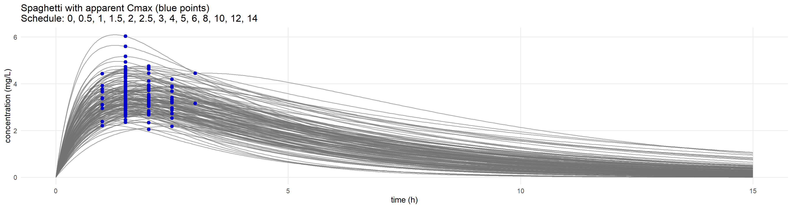
What is a lognormal distribution?
- If we have a variable which is lognormally distributed, it means that the ln() transformed variables would be normally distributed.
- In practice this means that a “handful of such variables would be “pretty big”
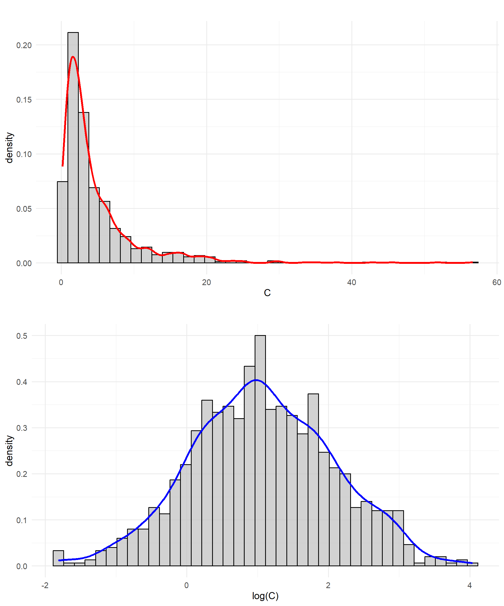
Why lognormal?
Physiology scales in percent changes
many multiplicative influences stack up (97% \(\times\) 119% \(\times\) 68% \(\times\) 96%….)
product of many little random effects ⇒ lognormal
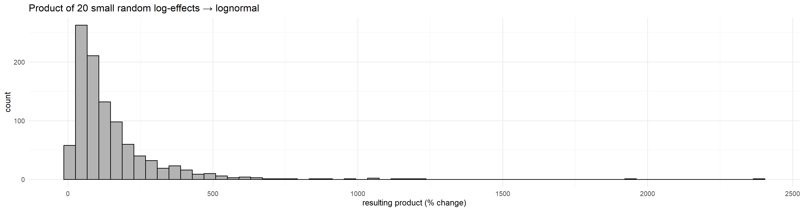
Plotting on the log scale
- A real-life problem is when log() transforming is that \(log(0)=NA\)
- Add a small value (\(\delta\)) to every observation (eg. 1% of the 5th percentile or 0.1)
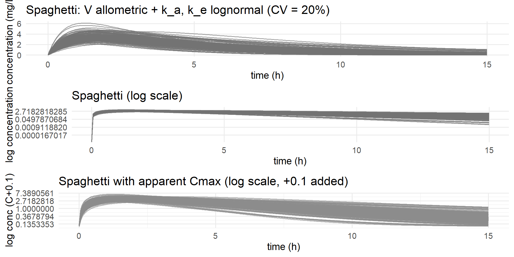
Noncompartmental Analysis (NCA): why do we do it
- mechanistic models are powerful but assumption-rich
- real PK datasets: ~18–24 sampling points per subject
- often too few points to safely “fit” all compartments
- the “correct” model is not generally definable (different drugs behave differently)
- therefore we compress the large time series into a *handful of interpretable summary numbers
- this is noncompartmental analysis (it doesn’t rely on compartments)
What NCA extracts
- \(C_{max}\) (peak observed value) - generally tied to absorption
- \(t_{max}\) (time of peak)
- AUC (area under curve) – numeric integration of the curve - tied to exposure
- terminal slope (lambda_z) → half-life
- these describe parts of the shape without committing to a structure
How to think about NCA
- goal: dimension reduction with biological interpretability
- NCA values are not parameters of a model (one less layer of abstraction)
- they are useful stable summaries of the curve shape
- 2 profiles with the same Cmax + AUC feel “similar” in broad terms even if their ka/ke or number of “true” compartments differ
- NCA gives a compact basis to compare treatments / formulations / subjects in a concrete and generalizable way
Intra-subject changes
- Using NCA we end up with a handful of log-normally distributed \(C_{max}\) and AUC values
- If there are some which were obtained from the same subject after different setups (dosing different products, at different times, different ways etc.), we can estimate the intra-subject variability
- This always depends on the context of the study at hand
\[ \mathrm{ISCV} \;=\; \sqrt{ \exp(s_w^2) - 1 },\quad s_w^2 \;=\; \frac{\mathrm{Var}(d_i)}{2},\quad d_i = \log(C_{i,B}) - \log(C_{i,A}) \]
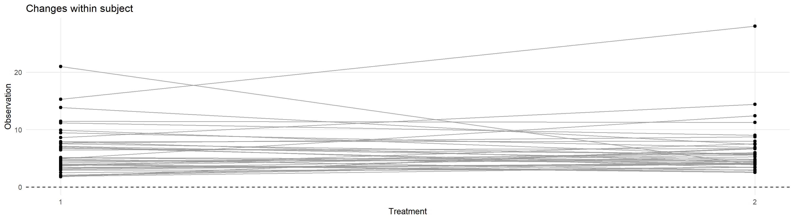
Stuff needed for sample size calculation
The sample size is a deterministic function of:
- The design
- The Power (80% or 90%)
- The Dropout rate (0%-30%, usually 10%)
- The point estimate (T/R, theta, usually 0.95)
- The ISCV
We need all input parameters
Statistical Indoctrination